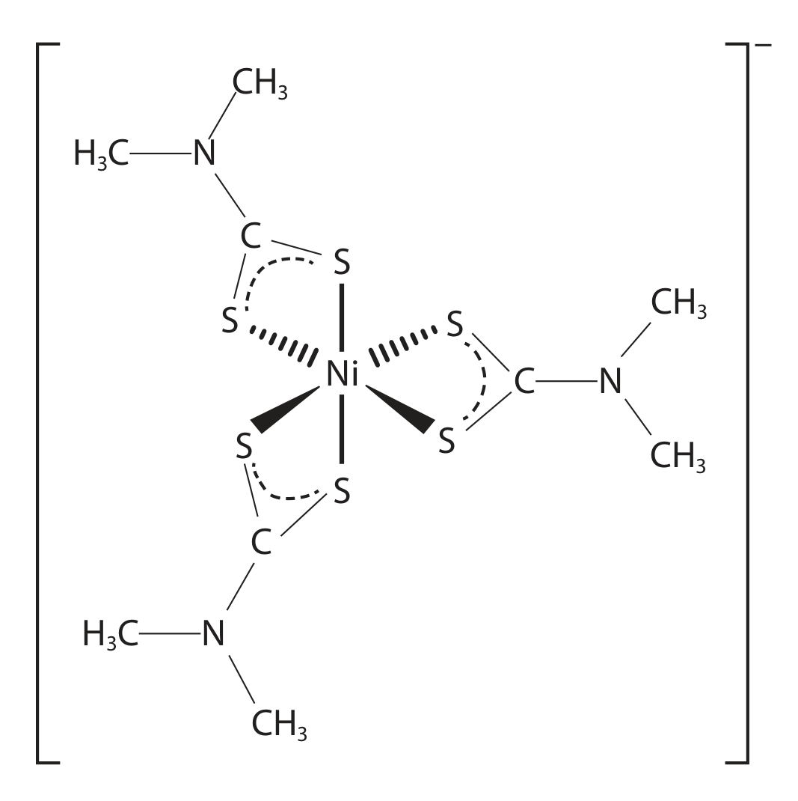
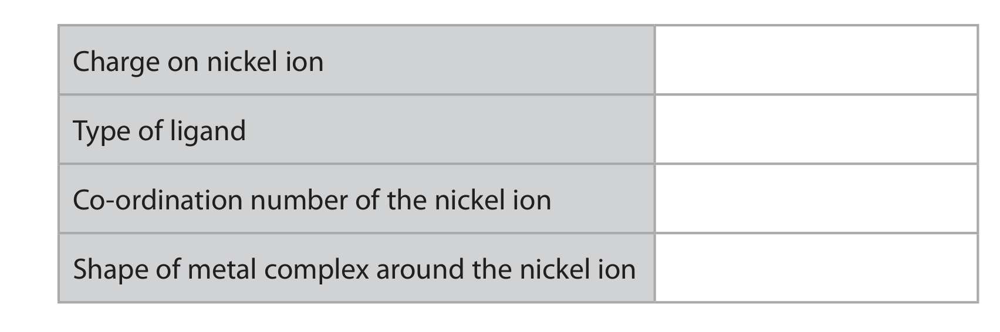
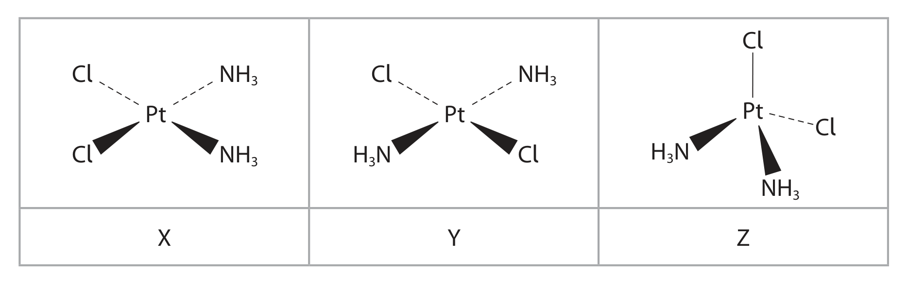
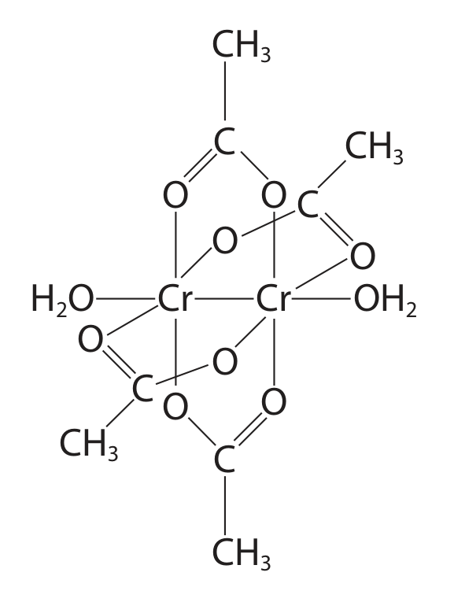
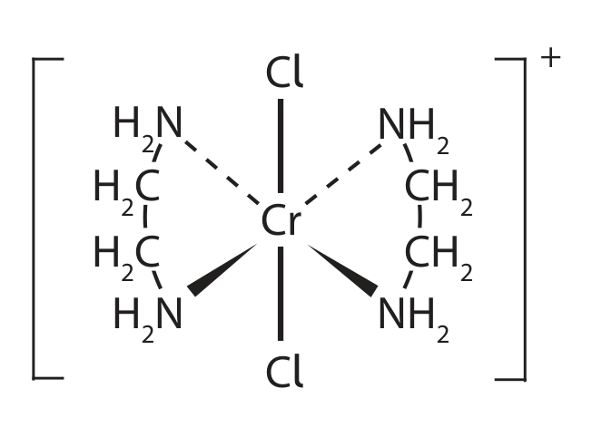
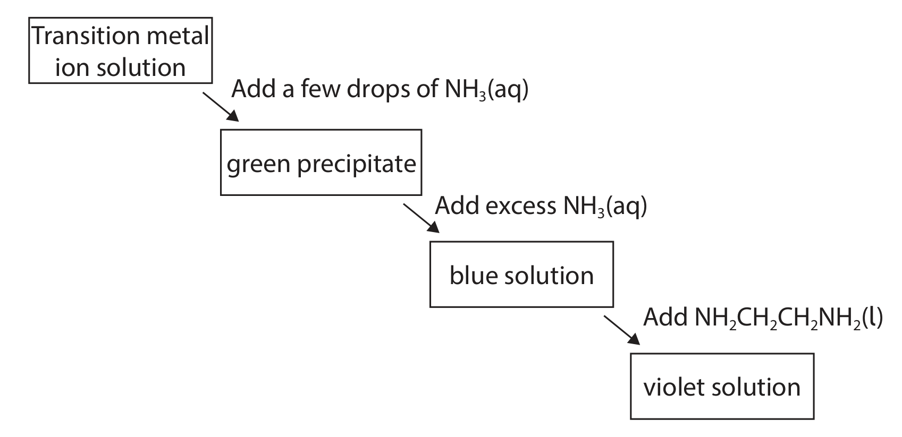

5.3 Transition Metal Reactions · Topic 17
Redox chemistry, ligand exchange and catalysis
5.3 Transition Metal Reactions · Topic 17
本页对应 5.3 Transition Metal Reactions.pdf.pdf，范围为 Pearson Edexcel International Advanced Level Chemistry specification 的 Topic 17: Transition Metals and their Chemistry（17.18–17.24, 17.26–17.33）。解释采用中文，专业词汇保留 English，便于和 Data Booklet、redox tables、reaction schemes 及 exam wording 对照。
Learning objectives
学完本页后，你应该能够：
- use
E°data to explain vanadium / chromium interconversions and chromate-dichromate equilibrium； - write observations and ionic equations for transition-metal ions with sodium hydroxide and ammonia；
- explain ligand exchange、deprotonation 和 amphoteric behaviour；
- explain heterogeneous、homogeneous 和 autocatalysis，并完成 Core Practical 14 的 planning points。
17.18-17.21 Vanadium and chromium redox chemistry
Vanadium oxidation states and colours
Vanadium 常见 oxidation states：+2 purple、+3 green、+4 blue、+5 yellow。Zinc 在 acidic solution 中作为 reducing agent，可将 vanadium(V) 逐步 reduce：yellow → blue → green → purple。


Using E° to predict vanadium interconversion
Relevant reduction potentials include：
\[ \ce{V^{2+} + 2e- -> V}\quad E^\circ=-1.18\ \mathrm{V} \]
\[ \ce{V^{3+} + e- -> V^{2+}}\quad E^\circ=-0.26\ \mathrm{V} \]
\[ \ce{VO^{2+} + 2H+ + e- -> V^{3+} + H2O}\quad E^\circ=+0.34\ \mathrm{V} \]
\[ \ce{VO2^+ + 2H+ + e- -> VO^{2+} + H2O}\quad E^\circ=+1.00\ \mathrm{V} \]
More positive E° 对应 stronger oxidising agent；more negative value 的 reduced species 是 stronger reducing agent。

Chromium redox reactions
Important half-equations include：
\[ \ce{Cr2O7^{2-} + 14H+ + 6e- -> 2Cr^{3+} + 7H2O}\quad E^\circ=+1.33\ \mathrm{V} \]
\[ \ce{Cr^{3+} + e- -> Cr^{2+}}\quad E^\circ=-0.41\ \mathrm{V} \]
\[ \ce{CrO4^{2-} + 4H2O + 3e- -> Cr(OH)3 + 5OH-}\quad E^\circ=-0.13\ \mathrm{V} \]
\[ \ce{H2O2 + 2e- -> 2OH-}\quad E^\circ=+1.24\ \mathrm{V} \]


Chromate-dichromate equilibrium
\[ \ce{2CrO4^{2-}(aq) + 2H+(aq) <=> Cr2O7^{2-}(aq) + H2O(l)} \]
Chromate(VI) 是 yellow，在 alkaline conditions 稳定；dichromate(VI) 是 orange，在 acidic conditions 稳定。Adding acid shifts equilibrium right；adding alkali removes H+，shifts equilibrium left。Chromium oxidation number remains +6，因此这不是 redox reaction。
17.22-17.24 Reactions with hydroxide and ammonia
Adding aqueous sodium hydroxide 或 aqueous ammonia to transition-metal aqua ions，通常先发生 deprotonation，生成 hydroxide precipitate。Excess reagent 可能使 precipitate dissolve，形成 complex ion。


对于 Cu2+：
\[ \ce{[Cu(H2O)6]^{2+} + 2OH- -> [Cu(H2O)4(OH)2](s) + 2H2O} \]
\[ \ce{[Cu(H2O)6]^{2+} + 2NH3 -> [Cu(H2O)4(OH)2](s) + 2NH4+} \]
Chromium(III) hydroxide 表现 amphoteric behaviour：
\[ \ce{[Cr(H2O)3(OH)3](s) + 3H+ -> [Cr(H2O)6]^{3+}} \]
\[ \ce{[Cr(H2O)3(OH)3](s) + 3OH- -> [Cr(OH)6]^{3-} + 3H2O} \]
17.26-17.29 Heterogeneous catalysis
Heterogeneous catalyst 与 reactants 处于 different phases，通常是 solid catalyst + gas / solution reactants。Reaction 发生在 catalyst surface 的 active sites：
- Adsorption：reactant molecules attach to surface；
- Reaction：adsorbed bonds weakened，reactants held close / correct orientation；
- Desorption：product molecules detach from surface。
Contact process：
\[ \ce{2SO2(g) + O2(g) <=> 2SO3(g)} \]
V2O5 通过 +5 ↔︎ +4 cycle acts as heterogeneous catalyst。Catalyst 不改变 equilibrium position，只提供 lower-activation-energy pathway。
Catalytic converters
Petrol-engine exhaust 中的 CO 和 NO 可在 Pt / Rh catalyst surface 反应：
\[ \ce{2CO(g) + 2NO(g) -> 2CO2(g) + N2(g)} \]
Ceramic honeycomb support 增加 surface area，并减少 expensive precious metal 的用量。

17.30-17.32 Homogeneous catalysis and autocatalysis
Iron(II) catalysis
Overall reaction：
\[ \ce{S2O8^{2-} + 2I- -> 2SO4^{2-} + I2} \]
Fe(II) / Fe(III) redox cycle：
\[ \ce{S2O8^{2-} + 2Fe^{2+} -> 2SO4^{2-} + 2Fe^{3+}} \]
\[ \ce{2I- + 2Fe^{3+} -> I2 + 2Fe^{2+}} \]
Fe(II) 被 regenerate，所以是 catalyst。Starch 可显示 iodine 形成的 blue-black colour。

Manganese(II) autocatalysis
Autocatalysis 是 reaction product acts as catalyst，因而 reaction rate 随 reaction progress 加快。Acidified permanganate 与 oxalate 的 overall equation：
\[ \ce{5C2O4^{2-} + 2MnO4^- + 16H+ -> 10CO2 + 2Mn^{2+} + 8H2O} \]
Product Mn2+ acts as autocatalyst。开始时 Mn2+ concentration 很低，reaction slow；随着 Mn2+ 形成，rate increases。Purple MnO4- 消耗可用 colorimetry monitor。


17.33 Core Practical 14
Core Practical 14 要求 prepare a transition-metal complex。Planning 和 evaluation 应包括：
- 由 ligand formula 和 required coordination number 写 complex formula；
- 按 stoichiometric ratio 称量 / 量取 metal salt 和 ligand solution；
- 控制 pH、temperature、addition order 和 reaction time；
- 通过 filtration、washing、drying / crystallisation isolate product；
- 用 mass of dry product 计算 percentage yield；
- 讨论 incomplete reaction、side reactions、product loss 和 wet crystals 对 yield 的影响；
- 使用 goggles、gloves，并根据 metal salts / ammonia / corrosive reagents 做 risk assessment。
Exam checklist
Unit 5 Past-paper practice · Topic 17 / 5.3 Reactions and complexes
以下为 PastPaper/Unit5 中 2021–2026 年与 complex ions、ligands、colour、shape、isomerism、haemoglobin 和 chelate effect 直接相关的真题。QP 题干保留 English wording；答案默认隐藏，structured question 的每个 subquestion 均保留 answer space。题目中需要的 diagram 只使用对应试卷 extracted_figures/<paper>/adjusted 中的独立裁图。
Structured questions · 大题
2021 Jan · U5A Q21 A yellow crystalline solid E dissolved in distilled water to give a yellow solution. Addition of dilute sulfuric acid to this solution produced an orange solution F. Warming F with ethanol resulted in a green solution G, and the formation of ethanal. A standard cell was set up using solutions of F and G for the right-hand electrode and ethanol and ethanal for the left-hand electrode. \(E^\circ_{\mathrm{cell}}\) was found to be +1.94 V. The half-equation for ethanal / ethanol is \(\ce{CH3CHO + 2H+ + 2e- <=> C2H5OH}\), \(E^\circ=-0.61\) V.
(a) Deduce the formulae of the ions responsible for the colours of F and G, using the standard electrode potential and the values in the Data Booklet. (2)
(b) Write the overall equation for the reaction in the cell. State symbols are not required. (2)
(c) Write the ionic equation for the reaction of the aqueous solution of E with dilute sulfuric acid. State symbols are not required. (1)
Detailed markscheme-based answer · 逐小问得分点
- F contains \(\ce{Cr2O7^{2-}}\) (orange) and G contains \(\ce{Cr^{3+}}\) (green); use \(+1.94=(-0.61)-E^\circ_{\mathrm{right}}\) to obtain the chromium(VI) / chromium(III) potential. [2]
- Combine \(\ce{Cr2O7^{2-}}\) reduction with ethanol oxidation and balance electrons and \(\ce{H+}\). [2]
- Acidification converts chromate / dichromate equilibrium to \(\ce{Cr2O7^{2-}}\) in acidic solution. [1]
2022 Jan · U5A Q10 This question is about silver and silver compounds. Glass decorations are made reflective by coating their inner surface with silver using silver nitrate solution, ammonia and glucose under alkaline conditions. Initially the colourless complex ion diamminesilver(I), \(\ce{[Ag(NH3)2]+}\), forms.
(a)(i) Explain the shape of \(\ce{[Ag(NH3)2]+}\). (3)
(a)(ii) Explain why \(\ce{[Ag(NH3)2]+}\) is colourless. (2)
(b) Glucose reduces the silver(I) complex to silver metal. Explain why this is a redox reaction. (2)
Detailed markscheme-based answer · 逐小问得分点
- Two ligands give coordination number 2; the complex is linear because the ligand-pair repulsion is minimised at 180°. [3]
- \(\ce{Ag+}\) is \(d^{10}\), so d–d transitions cannot occur; visible light is not absorbed by d–d excitation. [2]
- Ag(I) gains electrons to form Ag(0), while glucose is oxidised; electron transfer and oxidation-number changes identify a redox reaction. [2]
2024 Jan · U5A Q17 Transition metal compounds can show a number of different types of isomerism. Hydration isomerism is where different numbers of water molecules act as ligands. The name chromium(III) chloride is given to several compounds with formula \(\ce{CrCl3.xH2O}\), including hydration isomers: \(\ce{[Cr(H2O)6]^{3+}3Cl-}\) is violet, \(\ce{[Cr(H2O)5Cl]^{2+}2Cl-.H2O}\) is pale green, and \(\ce{[Cr(H2O)4Cl2]+Cl-.2H2O}\) is dark green.
(a)(i) Explain why the three isomers have different colours. (3)
(a)(ii) Explain why the three compounds are hydration isomers. (2)
(b) Draw or describe the geometrical isomers possible for \(\ce{[Cr(H2O)4Cl2]+}\). (2)
Detailed markscheme-based answer · 逐小问得分点
- Ligands cause d-orbital splitting; different ligand environments produce different \(ΔE\) values, so different wavelengths are absorbed and different complementary colours are seen. [3]
- Different numbers of water molecules are inside the coordination sphere as ligands, with the remaining water outside as water of crystallisation. [2]
- \(\ce{[Cr(H2O)4Cl2]+}\) has cis and trans arrangements of the two chloride ligands. [2]
2024 May · U5A Q16 Metal ions occur naturally in river water but near industrial plants the concentrations can reach toxic levels. Wastewater from a stainless steel electropolishing plant contains dangerous concentrations of transition metal ions as aqueous complexes. Chemical precipitation can be used to remove these ions.
(a) Complete the equation for the reaction of a laboratory reagent with aqueous \(\ce{Fe^{3+}}\) ions to produce a precipitate, including state symbols. \(\ce{[Fe(H2O)6]^{3+}(aq) + ldots ->}\) (2)
(b)(i) A representation of sodium dimethyldithiocarbamate bonding with a nickel ion is shown in the QP. Complete the table: charge on nickel ion; type of ligand; coordination number; shape of the complex. (3)


(b)(ii) Explain, using a balanced equation, why formation of the dimethyldithiocarbamate complex from aqueous nickel ions is thermodynamically feasible. State symbols are not required. (2)
Detailed markscheme-based answer · 逐小问得分点
- (a) Add \(\ce{OH-}\) to \(\ce{[Fe(H2O)6]^{3+}}\): \(\ce{[Fe(H2O)6]^{3+} + 3OH- -> Fe(OH)3(s) + 6H2O(l)}\). The equation must conserve charge, atoms and state symbols.
- (b)(i) The complex contains \(\ce{Ni^{2+}}\). Each dimethyldithiocarbamate ion donates through two sulfur atoms, so it is bidentate; two such ligands give coordination number 4 and the donor atoms arrange tetrahedrally in the QP diagram.
- (b)(ii) Write the ligand-exchange / precipitation equation with the correct complex formula and explain that coordinated water is released. The number of independently moving particles increases, so \(ΔS_{system}>0\); this makes \(ΔG=ΔH-TΔS\) more negative and the reaction thermodynamically feasible. [7]
2026 Jan · U5A Q20 Crystals of cobalt(II) chloride dissolve in water to form a pink solution containing complex ion A. Addition of a few drops of ammonia solution produces a blue precipitate, B, which redissolves as more ammonia is added. The resulting solution contains a yellow complex ion C. On standing in air, C is oxidised to a brown solution containing complex ion D.
(a)(i) Write an equation for the reaction when A is converted into B. State symbols are not required. (2)
(a)(ii) State the type of reaction and the role of ammonia when B is precipitated from the solution of A. (2)
(b) Give the formulae of the cobalt complex ions C and D. (2)
(c) Explain why solutions containing A, C and D are coloured, and why the three solutions are different colours. (6)
Detailed markscheme-based answer · 逐小问得分点
- (a)(i) \(\ce{[Co(H2O)6]^{2+}+2NH3 -> Co(OH)2(s)+2NH4+ +4H2O}\).
- (a)(ii) This is deprotonation, not ligand exchange: \(\ce{NH3}\) acts as a base and removes protons from coordinated water, producing \(\ce{OH-}\) / \(\ce{NH4+}\).
- (b) \(\ce{C=[Co(NH3)6]^{2+}}\) and \(\ce{D=[Co(NH3)6]^{3+}}\).
- (c) Both ions have partially filled d-subshells. Ligands split the d orbitals; absorption of selected visible wavelengths promotes d–d transitions, and the complementary colour is observed. Changing oxidation number from +2 to +3 changes the metal-ion charge density and \(ΔE\); changing water ligands to ammonia also changes the ligand field, so A, C and D absorb different wavelengths and show different colours. [10]
2021 Oct · U5A Q18 A series of reactions with iron and iron complexes was carried out. A sample of iron was heated with hydrochloric acid and a pale green hydrated salt A with molar mass 198.8 g mol\(^{-1}\) was crystallised. Salt A was dissolved in water to form a pale green solution containing complex ion B. On addition of excess aqueous potassium cyanide, the solution turned yellow due to complex ion C. Chlorine gas was bubbled through the solution containing C, forming a red solution of complex ion D. Salt E, the potassium salt of D, was crystallised.
(a) Deduce the formula of hydrated salt A. You must show your working. (2)
(b) Give the formula of complex ion B. (1)
(c) Complex ion C has six cyanide ligands. Draw its structure, clearly showing its three-dimensional shape. (1)
(d) Salt E contains 35.6% K, 17.0% Fe, 21.9% C and 25.5% N by mass. Calculate its empirical formula. (3)
(e) Write the ionic equation for the reaction of complex ion C with chlorine to form complex ion D. (2)
(f) Complete the table to identify the type of each reaction: Reaction 2 and Reaction 3 as neutralisation, ligand exchange and redox. (2)
Detailed markscheme-based answer · 逐小问得分点
- (a) For 100 g: K \(=35.6/39.1=0.910\) mol, Fe \(=17.0/55.8=0.305\) mol, C \(=21.9/12.0=1.825\) mol, N \(=25.5/14.0=1.821\) mol. Dividing by 0.305 gives approximately K:Fe:C:N \(=3:1:6:6\), so E is \(\ce{K3[Fe(CN)6]}\).
- (b) \(\ce{B=[Fe(H2O)6]^{2+}}\); six cyanide ligands give octahedral \(\ce{C=[Fe(CN)6]^{4-}}\).
- (c) \(\ce{2[Fe(CN)6]^{4-}+Cl2 -> 2[Fe(CN)6]^{3-}+2Cl-}\); Fe(II) is oxidised to Fe(III) and chlorine is reduced to chloride. Reaction 2 is ligand exchange and Reaction 3 is redox. [11]
2023 Oct · U5A Q19 This question is about compounds and complex ions of iron.
(a) A compound of iron contains 39.5% potassium, 28.2% iron and 32.3% oxygen by mass. Calculate its empirical formula. (2)
(b) The reaction \(\ce{2I- + S2O8^{2-} -> I2 + 2SO4^{2-}}\) is thermodynamically feasible but very slow and is catalysed by \(\ce{Fe^{2+}}\) ions. (i) Give a reason why the activation energy is high without a catalyst. (1) (ii) Write the ionic equations for the reactions when \(\ce{Fe^{2+}}\) is added. (2)
(c) In aqueous solution iron(II) exists as \(\ce{[Fe(H2O)6]^{2+}}\). (i) Explain how water acts as a monodentate ligand. (2) (ii) Explain the shape of \(\ce{[Fe(H2O)6]^{2+}}\). (2)
(d) Haemoglobin is an iron(II) complex which carries oxygen around the body. Explain, in terms of the iron(II) complex, why carbon monoxide is toxic. (2)
(e) Ethanedioate ligands react with iron(II) ions: \(\ce{[Fe(H2O)6]^{2+}+2C2O4^{2-}->[Fe(C2O4)2(H2O)2]^{2-}+4H2O}\). Explain, in terms of entropy, why this reaction is feasible. (2)
(f) Potassium dichromate(VI) oxidises iron(II) ions to iron(III) ions in acid solution. A solution contains 6.28 g dm\(^{-3}\) of iron as a mixture of iron(II) and iron(III) ions. A 25.0 cm\(^3\) portion is titrated with a solution containing 2.56 g dm\(^{-3}\) dichromate(VI) ions; the mean titre is 22.55 cm\(^3\). Calculate the percentage of iron present as iron(III) ions. (5)
Detailed markscheme-based answer · 逐小问得分点
- (a) \(\ce{K2FeO4}\). [2]
- (b) Negative ions repel; catalytic steps are \(\ce{2Fe^{2+}+S2O8^{2-}->2Fe^{3+}+2SO4^{2-}}\) and \(\ce{2Fe^{3+}+2I-->2Fe^{2+}+I2}\). [3]
- (c) Water donates a lone pair from oxygen to form one coordinate bond; six coordinate bonds arrange octahedrally to minimise repulsion. [4]
- (d) CO replaces oxygen at Fe(II), forming a stable complex and preventing oxygen transport. [2]
- (e) The reaction produces more particles / releases coordinated water, giving a positive entropy change that favours feasibility. [2]
- (f) Use \(\ce{Cr2O7^{2-}:Fe^{2+}=1:6}\) and the total iron concentration to obtain the percentage of iron(III). [5]
2024 Oct · U5A Q18 This question is about coloured transition metal complex ions. The \(\ce{[Fe(H2O)6]^{2+}}\) complex ion is green and the \(\ce{[Fe(H2O)6]^{3+}}\) complex ion is yellow.
(a)(i) Explain why the \(\ce{[Fe(H2O)6]^{2+}}\) complex ion is coloured. (3)
(a)(ii) Explain why the two iron complex ions are different colours. (2)
(b)(i) The thiocyanate ion, \(\ce{SCN-}\), forms a blood-red coloured complex ion with iron(III) ions. Complete the alternative dot-and-cross diagram of \(\ce{SCN-}\) where the negative charge is on sulfur. (2)
(b)(ii) 12.8 cm\(^3\) of 0.05 mol dm\(^{-3}\) iron(III) chloride reacts with 8.0 cm\(^3\) of 0.08 mol dm\(^{-3}\) ammonium thiocyanate. Deduce the formula of the octahedral complex ion formed. You must show your working. (3)
(c) Colorimetry is used to determine the concentration of copper(II) sulfate. Six known solutions give absorbances at 635 nm. The data are 0.00, 0.28, 0.55, 0.83, 1.10 and 1.38 for concentrations 0.00, 0.10, 0.20, 0.30, 0.40 and 0.50 mol dm\(^{-3}\). (i) Plot absorbance against concentration. (3) (ii) Use the graph to determine the concentration of a diluted sample with absorbance 0.72, then calculate the original concentration when 50 cm\(^3\) is diluted to 250 cm\(^3\). (2) (iii) Explain one limitation of extrapolating the graph above 0.50 mol dm\(^{-3}\). (1)
Detailed markscheme-based answer · 逐小问得分点
- Fe(II) has a partially filled d-subshell; water ligands split the d orbitals; visible light is absorbed in d–d transitions and the complementary colour is observed. Different oxidation states give different splitting / absorption energies. [5]
- Use the sulfur-centred Lewis / dot-and-cross arrangement with correct valence electrons. The mole ratio \(\ce{Fe^{3+}}\) : \(\ce{SCN-}=1:1\) gives \(\ce{[Fe(SCN)(H2O)5]^{2+}}\). [5]
- The calibration graph is linear; absorbance 0.72 corresponds to about 0.26 mol dm\(^{-3}\) diluted, hence about 1.3 mol dm\(^{-3}\) original. Do not extrapolate beyond the measured range because linearity is not established / saturation may occur. [6]
2025 Jan · U5A Q20 This question is about some chromium compounds. The reaction scheme contains yellow \(\ce{CrO4^{2-}}\), orange \(\ce{Cr2O7^{2-}}\), green/grey \(\ce{Cr^{3+}}\) and a purple aqueous chromium(III) ammine complex.
(a)(i) Write the equation for Reaction 1, using the half-equations in the Data Booklet. (2)
(a)(ii) In Reaction 2, \(\ce{Cr2O7^{2-}}\) reacts with a metal M in acid conditions, forming \(\ce{Cr^{3+}}\) and \(\ce{M^{2+}}\). Identify a possible metal M by calculating \(E^\circ_{\mathrm{cell}}\). (2)
(a)(iii) Give the formula of the species responsible for the purple colour formed in Reaction 3, naming the type of reaction. (2)
(a)(iv) State whether Reaction 4 is a redox reaction. Justify your answer using oxidation numbers. (2)
(b)(i) A double salt of chromium contains \(\ce{Cr^{3+}}\), \(\ce{K+}\) and \(\ce{SO4^{2-}}\) ions. Deduce its simplest formula. (1)
(b)(ii) 56.74 g of this double salt loses 43.26 g of water on heating. Calculate the number of moles of water of crystallisation. (4)
Detailed markscheme-based answer · 逐小问得分点
- (a)(i) \(\ce{2Cr^{3+}+3H2O2+H2O->Cr2O7^{2-}+8H+}\). [2]
- (a)(ii) Any listed suitable metal such as Mg, V, Zn, Fe, Ni or Cu with a positive \(E^\circ_{\mathrm{cell}}\). [2]
- (a)(iii) \(\ce{[Cr(NH3)6]^{3+}}\); ligand exchange. [2]
- (a)(iv) No: chromium remains +6 in both \(\ce{Cr2O7^{2-}}\) and \(\ce{CrO4^{2-}}\). [2]
- (b) \(\ce{KCr(SO4)2}\); \(M_r=283.3\), moles double salt \(=56.74/283.3=0.200\), moles water \(=43.26/18.0=2.403\), so water of crystallisation \(=2.403/0.200=12\). [5]
Multiple-choice bank · 选择题
以下选择题保留完整题干及 A–D 选项；答案隐藏并附 explanation。
2021 Jan · U5A Q6 Nickel is classified as a transition metal. This is because nickel
A is a d-block element
B has partially filled d orbitals
C forms stable ions with partially filled d orbitals
D forms stable compounds in which it has different oxidation states
Show answer · 答案 + detailed explanation
Answer: C. The definition requires at least one stable ion with an incompletely filled d-subshell.2021 Jan · U5A Q7 Platinum forms \(\ce{Pt(NH3)2Cl2}\) and chromium forms \(\ce{CrCl4-}\). What are the shapes of these complexes, and what is the bonding between the ligands and the central atom?
A both square planar; ionic in both
B both tetrahedral; dative covalent in both
C Pt complex tetrahedral and Cr complex square planar; dative covalent / ionic
D Pt complex square planar and Cr complex tetrahedral; dative covalent in both
Show answer · 答案 + detailed explanation
Answer: D. \(\ce{Pt(NH3)2Cl2}\) is square planar; \(\ce{CrCl4-}\) is tetrahedral; ligand–metal bonds are coordinate / dative covalent.2021 May · U5A Q4 A ligand must be an
A electron-pair donor
B electron-pair donor and negatively charged
C electron-pair acceptor
D electron-pair acceptor and negatively charged
Show answer · 答案 + detailed explanation
Answer: A. A ligand donates a lone pair to the central metal ion; it may be neutral or negative.2021 May · U5A Q5 Diamminecopper(I) ions are not coloured because
A the d orbitals in copper(I) cannot be split
B the energy difference between the split d orbitals is outside the visible region
C d–d transitions are not possible because the d orbitals are fully occupied
D copper(I) complexes are readily oxidised
Show answer · 答案 + detailed explanation
Answer: C. Copper(I) is \(d^{10}\), so there are no empty d-orbitals available for a d–d transition.2021 May · U5A Q6 Copper(II) ions form a complex with 1,2-diaminoethane, en, with formula \(\ce{Cu(en)3^{2+}}\). What type of ligand is 1,2-diaminoethane, and what is the coordination number?
| Type of ligand | Coordination number | |
|---|---|---|
| A | bidentate | 3 |
| B | bidentate | 6 |
| C | tridentate | 3 |
| D | tridentate | 6 |
Show answer · 答案 + detailed explanation
Answer: B. Each en ligand donates through two nitrogen atoms; three ligands give coordination number 6.2022 Jan · U5A Q1 This question is about transition metal complexes. For \(\ce{[Cu(NH3)4(H2O)2]^{2+}}\), identify the bonding type; identify the tetrahedral complex; and identify the complex containing a bidentate ligand.
A covalent, dative covalent and ionic; \(\ce{[Pt(NH3)2Cl2]}\); \(\ce{[Co(NH2CH2CH2NHCH2CH2NH2)2]^{3+}}\)
B covalent and dative covalent only; \(\ce{[Cu(H2O)4(OH)2]}\); \(\ce{[Cu(NH3)4(H2O)2]^{2+}}\)
C covalent only; \(\ce{[Cu(NH3)4(H2O)2]^{2+}}\); \(\ce{[Ni(en)3]^{2+}}\)
D dative covalent only; \(\ce{[CoCl4]^{2-}}\); \(\ce{[Mn(EDTA)]^{2-}}\)
Show answer · 答案 + detailed explanation
Answers: B, D, C. Complexes contain covalent bonds within ligands and dative covalent ligand–metal bonds; tetrahedral \(\ce{[CoCl4]^{2-}}\); en is bidentate.2022 Oct · U5A Q7 Platinum forms \(\ce{Pt(NH3)2Cl2}\), which is used in cancer treatment. Three possible structures X, Y and Z are shown.

The complex used in cancer treatment contains
A structure X only
B structure Y only
C structure Z only
D an equimolar mixture of structures X and Y only
Show answer · 答案 + detailed explanation
Answer: A. Cisplatin is the cis square-planar isomer, not the trans isomer.2022 Oct · U5A Q8 When oxygen binds to the haem group in haemoglobin, each oxygen molecule
A bonds reversibly to an iron(II) ion
B bonds irreversibly to an iron(II) ion
C replaces an iron(II) ion in a reversible reaction
D replaces an iron(II) ion in an irreversible reaction
Show answer · 答案 + detailed explanation
Answer: A. Oxygen binds reversibly to Fe(II), allowing loading and unloading in the respiratory system.2023 Jan · U5A Q2 A chromium(III) complex ion has formula \(\ce{[CrCl2(NH2CH2CH2NH2)2]^x}\). What are the coordination number and overall charge?
| Coordination number | Overall charge | |
|---|---|---|
| A | 2 | 0 |
| B | 3 | +1 |
| C | 4 | +2 |
| D | 6 | +3 |
Show answer · 答案 + detailed explanation
Answer: B for the charge and D for the coordination number. Each en is bidentate, so \(2+2+2=6\) coordinate bonds; charge is \(+3-2=+1\). The complete QP presents these as two separate one-mark parts.2023 Jan · U5A Q3 Which complex ion is colourless?
A \(\ce{[Al(H2O)6]^{3+}}\)
B \(\ce{[Cu(H2O)6]^{2+}}\)
C \(\ce{[Fe(H2O)6]^{3+}}\)
D \(\ce{[Ni(H2O)6]^{2+}}\)
Show answer · 答案 + detailed explanation
Answer: A. Aluminium is not a transition-metal ion and has no partially filled d-subshell.2023 Jan · U5A Q4 Which metal hydroxide precipitate is soluble in both excess aqueous ammonia and excess aqueous sodium hydroxide?
A \(\ce{Cu(OH)2}\)
B \(\ce{Fe(OH)2}\)
C \(\ce{Ni(OH)2}\)
D \(\ce{Zn(OH)2}\)
Show answer · 答案 + detailed explanation
Answer: D. Zinc hydroxide is amphoteric and dissolves in excess hydroxide; zinc also forms a soluble ammine complex in excess ammonia.2023 May · U5A Q7 The structure of \(\ce{Cr2(CH3CO2)4(H2O)2}\) is shown.

What is the coordination number of chromium?
A two
B four
C six
D twelve
Show answer · 答案 + detailed explanation
Answer: C. Each chromium is bonded to six donor atoms in the shown bridged complex.2023 May · U5A Q8 Which complex contains only monodentate ligands?
A \(\ce{[Fe(CN)6]^{4-}}\)
B \(\ce{[Cr(C2O4)3]^{3-}}\)
C \(\ce{[Ni(EDTA)]^{2-}}\)
D \(\ce{[Co(NH2CH2CH2NH2)2Cl2]}\)
Show answer · 答案 + detailed explanation
Answer: A. Cyanide is monodentate; oxalate, EDTA and ethane-1,2-diamine are multidentate.2023 May · U5A Q9 Which complex has a ligand-metal-ligand bond angle of 109.5°?
A \(\ce{[CuCl4]^{2-}}\)
B \(\ce{[Fe(EDTA)]-}\)
C \(\ce{[Ag(NH3)2]+}\)
D \(\ce{[Pt(NH3)2Cl2]}\)
Show answer · 答案 + detailed explanation
Answer: A. A tetrahedral complex has bond angles of approximately 109.5°.2023 May · U5A Q12 Aqueous ammonia is added in excess to an aqueous solution of \(\ce{Cu^{2+}}\). What is the equation for the overall reaction?
A \(\ce{[Cu(H2O)6]^{2+}+2NH3-> [Cu(H2O)4(OH)2]+2NH4+}\)
B \(\ce{[Cu(H2O)6]^{2+}+2NH3-> [Cu(NH3)2(H2O)4]^{2+}+2H2O}\)
C \(\ce{[Cu(H2O)6]^{2+}+4NH3-> [Cu(NH3)4(H2O)2]^{2+}+4H2O}\)
D \(\ce{[Cu(H2O)6]^{2+}+6NH3-> [Cu(NH3)6]^{2+}+6H2O}\)
Show answer · 答案 + detailed explanation
Answer: C. Four ammonia ligands replace four water ligands in the usual deep-blue copper(II) complex.2023 Oct · U5A Q2 In which pair does the transition metal have the same oxidation number?
A \(\ce{CrO2Cl2}\) and \(\ce{[Cr(NH3)4Cl2]+}\)
B \(\ce{[Cu(NH3)2]+}\) and \(\ce{[CuCl4]^{2-}}\)
C \(\ce{Mn2O3}\) and \(\ce{MnO2}\)
D \(\ce{VO3-}\) and \(\ce{VO^{2+}}\)
Show answer · 答案 + detailed explanation
Answer: D. Vanadium is +5 in both \(\ce{VO3-}\) and \(\ce{VO^{2+}}\).2023 Oct · U5A Q3 What is the co-ordination number of chromium in the complex ion shown, \(\ce{[CrCl2(en)2]+}\)?

A 2
B 3
C 4
D 6
Show answer · 答案 + detailed explanation
Answer: D. Two chloride ligands contribute two coordinate bonds and two bidentate en ligands contribute four, giving six.2023 Oct · U5A Q4 A pale green aqueous solution E gives a green precipitate with sodium hydroxide, unchanged in excess; aqueous ammonia gives a green precipitate that dissolves in excess to form a pale blue solution. Which ion is present in E?
A \(\ce{Cu^{2+}}\)
B \(\ce{Fe^{2+}}\)
C \(\ce{Ni^{2+}}\)
D \(\ce{V^{2+}}\)
Show answer · 答案 + detailed explanation
Answer: C. Nickel(II) gives the stated green hydroxide and soluble pale-blue ammine complex.2023 Oct · U5A Q5 A small amount of aqueous ammonia is added to a solution containing zinc ions. Which equation represents formation of the white precipitate?
A \(\ce{[Zn(H2O)6]^{2+}+2NH3->[Zn(OH)2(H2O)4]^{2+}+2NH4+}\)
B \(\ce{[Zn(H2O)6]^{2+}+2NH3->Zn(OH)2(H2O)4+2NH4+}\)
C \(\ce{[Zn(H2O)6]^{2+}+4NH3->[Zn(NH3)4(H2O)2]^{2+}+4H2O}\)
D \(\ce{[Zn(H2O)6]^{2+}+4NH3->Zn(NH3)4(H2O)2+2H2O+2H3O+}\)
Show answer · 答案 + detailed explanation
Answer: B. Ammonia acts as a base, deprotonating coordinated water to precipitate neutral hydrated zinc hydroxide.2024 Oct · U5A Q2 Which ion shows the typical property of transition metals by forming coloured complexes?
A \(\ce{Cu+}\)
B \(\ce{Ni^{2+}}\)
C \(\ce{Sc^{3+}}\)
D \(\ce{Zn^{2+}}\)
Show answer · 答案 + detailed explanation
Answer: B. \(\ce{Ni^{2+}}\) has a partially filled d-subshell; \(\ce{Cu+}\), \(\ce{Sc^{3+}}\) and \(\ce{Zn^{2+}}\) are \(d^{10}\) or \(d^0\) in the relevant ions.2024 Oct · U5A Q3 The formula of a chromium compound is \(\ce{[Cr(H2O)4Cl2]+Cl-}\) and the molar mass of the compound is 230.5 g mol\(^{-1}\). What is the percentage by mass of chlorine in the complex ion?
A 18.2%
B 30.8%
C 36.4%
D 46.2%
Show answer · 答案 + detailed explanation
Answer: D. Count the two coordinated chloride ions and the counter-ion chloride, then divide the total chlorine mass by the stated molar mass.2025 Jan · U5A Q1 Which species cannot act as a ligand in the formation of a complex ion?
A \(\ce{C2H6}\)
B CO
C \(\ce{OH-}\)
D \(\ce{C4H9NH2}\)
Show answer · 答案 + detailed explanation
Answer: A. Ethane has no available lone pair for donation; CO, hydroxide and butylamine can donate electron pairs.2025 Jan · U5A Q2 An aqueous solution of a transition metal ion absorbs frequencies of light corresponding to green, yellow and red. Which ion is likely to be in the solution?
A \(\ce{Mn^{2+}}\)
B \(\ce{Co^{2+}}\)
C \(\ce{Ni^{2+}}\)
D \(\ce{Cu^{2+}}\)
Show answer · 答案 + detailed explanation
Answer: D. The ion appears the complementary colour to the light absorbed; the copper(II) aqua ion is blue.2025 Jan · U5A Q4 What is the colour of the \(\ce{VO^{2+}}\) ion in aqueous solution?
A blue
B green
C violet
D yellow
Show answer · 答案 + detailed explanation
Answer: A. The vanadyl(IV) ion is blue in aqueous solution.2025 Jan · U5A Q7 What are the shapes of \(\ce{[CuCl4]^{2-}}\) and \(\ce{Pt(NH3)2Cl2}\)?
| \(\ce{[CuCl4]^{2-}}\) | \(\ce{Pt(NH3)2Cl2}\) | |
|---|---|---|
| A | square planar | square planar |
| B | square planar | tetrahedral |
| C | tetrahedral | square planar |
| D | tetrahedral | tetrahedral |
Show answer · 答案 + detailed explanation
Answer: C. Four-coordinate copper(II) chloride is tetrahedral in this syllabus context; Pt(II) with two ammine and two chloride ligands is square planar.2025 May · U5AA Q5 The aqueous solution of a transition metal ion is colourless. Which is the electronic configuration of this ion?
A \([\ce{Ar}]3d^8\)
B \([\ce{Ar}]3d^{10}\)
C \([\ce{Ar}]3d^54s^1\)
D \([\ce{Ar}]3d^{10}4s^2\)
Show answer · 答案 + detailed explanation
Answer: B. A \(d^{10}\) ion has no partially filled d-subshell, so no \(d\)–\(d\) transition is possible; \([\ce{Ar}]3d^{10}\) is the colourless ion listed in the QP options.2025 May · U5AA Q6 Excess aqueous silver nitrate is added to a solution containing 0.100 mol of chromium(III) chloride, \(\ce{CrCl3.6H2O}\). A precipitate, AgCl, appears immediately, which after drying, is found to have a mass of 14.35 g. What is the formula of the complex ion in the solution?
A \(\ce{[Cr(H2O)6]^{3+}}\)
B \(\ce{[CrCl(H2O)5]^{2+}}\)
C \(\ce{[CrCl2(H2O)4]+}\)
D \(\ce{[CrCl3(H2O)3]}\)
Show answer · 答案 + detailed explanation
Answer: C. \(n(\ce{AgCl})=14.35/143.5=0.100\) mol. Since 0.100 mol of chromium compound produces 0.100 mol of free chloride, there is one free chloride ion per formula unit; therefore the complex ion is \(\ce{[CrCl2(H2O)4]+}\).2025 May · U5AA Q7 This question is about transition metal complexes.
(a) Which complex has a tetrahedral structure? (1)
A \(\ce{[CrCl4]-}\)
B \(\ce{[Cu(NH3)4(H2O)2]^{2+}}\)
C \(\ce{[Pt(NH3)2Cl2]}\)
D \(\ce{[TiCl6]^{2-}}\)
(b) Which complex contains a metal in the +1 oxidation state? (1)
A \(\ce{[CuCl2]-}\)
B \(\ce{[CrCl4]-}\)
C \(\ce{[Pt(NH3)2Cl2]}\)
D \(\ce{[Ni(CO)4]}\)
Show answer · 答案 + detailed explanation
Answers: (a) A; (b) A. \(\ce{[CrCl4]-}\) is four-coordinate and tetrahedral. In \(\ce{[CuCl2]-}\), Cu has oxidation state \(+1\) because \(x-2=-1\); the metal oxidation states in the other choices are not \(+1\).2025 May · U5AA Q8 When \(\ce{EDTA^{4-}}\) is added to an aqueous solution of iron(III) ions, the EDTA complex is formed. Which is the best explanation for this?
A iron(III) ions form stronger bonds with \(\ce{EDTA^{4-}}\) ions than with water
B iron(III) ions form more bonds with \(\ce{EDTA^{4-}}\) ions than with water
C the formation of the EDTA complex produces more particles in solution
D water forms stronger hydrogen bonds than \(\ce{EDTA^{4-}}\)
Show answer · 答案 + detailed explanation
Answer: A. EDTA forms a stable chelate with Fe(III); the stronger metal–ligand interactions make ligand exchange thermodynamically favourable. The key mark point is stronger bonding, not simply a greater number of bonds or a particle-count argument.2026 Jan · U5A Q6 The stability of complex ions increases as the basicity of ligands increases. Multidentate ligands form more stable complexes than monodentate ligands. Which is the order of relative stability?
A \(\ce{[Ni(H2O)6]^{2+}>[Ni(NH3)6]^{2+}>[Ni(CH3NH2)6]^{2+}>[Ni(en)3]^{2+}}\)
B \(\ce{[Ni(en)3]^{2+}>[Ni(CH3NH2)6]^{2+}>[Ni(NH3)6]^{2+}>[Ni(H2O)6]^{2+}}\)
C \(\ce{[Ni(H2O)6]^{2+}>[Ni(CH3NH2)6]^{2+}>[Ni(NH3)6]^{2+}>[Ni(en)3]^{2+}}\)
D \(\ce{[Ni(en)3]^{2+}>[Ni(NH3)6]^{2+}>[Ni(CH3NH2)6]^{2+}>[Ni(H2O)6]^{2+}}\)
Show answer · 答案 + detailed explanation
Answer: B. Chelation gives the greatest stability; methylamine is more basic than ammonia, which is more basic than water.2026 Jan · U5AA Q6 A ligand exchange reaction occurs when EDTA is added to \(\ce{[Cu(H2O)2(NH3)4]^{2+}}\). What is the best explanation?
A the EDTA complex is more soluble than the original
B the EDTA complex is less soluble than the original
C \(ΔH_{\mathrm{reaction}}\) is positive
D \(ΔS_{\mathrm{system}}\) is positive
Show answer · 答案 + detailed explanation
Answer: D. One multidentate EDTA ligand replaces several monodentate ligands, increasing the number of freely moving particles and giving a positive entropy change.2026 Jan · U5AA Q8 Which are the correct colours of the complex ions formed by copper(II) ions with butylamine and with chloride ions?
| \(\ce{[Cu(C4H9NH2)4(H2O)2]^{2+}}\) | \(\ce{[CuCl4]^{2-}}\) | |
|---|---|---|
| A | blue | green |
| B | blue | yellow |
| C | yellow | blue |
| D | yellow | green |
Show answer · 答案 + detailed explanation
Answer: B. The butylamine complex is blue and the chloride complex is yellow under the stated conditions.2026 Jan · U5AA Q9 Platinum forms \(\ce{Pt(NH3)2Cl2}\) and chromium forms \(\ce{CrCl4-}\). What are the shapes of these complexes?
A both square planar
B both tetrahedral
C Pt complex tetrahedral and Cr complex square planar
D Pt complex square planar and Cr complex tetrahedral
Show answer · 答案 + detailed explanation
Answer: D. Pt(II) is square planar; four-coordinate chromium chloride is tetrahedral.2026 May · U5A Q3 A transition metal ion solution was tested as shown.

(a) Which transition metal ion is present?
A \(\ce{Cr^{3+}}\)
B \(\ce{Cu^{2+}}\)
C \(\ce{Fe^{2+}}\)
D \(\ce{Ni^{2+}}\)
(b) Which is the best explanation for the reaction when ethane-1,2-diamine is added to the blue solution?
A the bonds between the ligands and the transition metal ion are stronger in the product than in the reactant
B the reaction is extremely exothermic
C the reaction has a low activation energy
D the reaction is thermodynamically feasible because \(ΔS_{\mathrm{system}}\) is positive
Show answer · 答案 + detailed explanation
Answers: A, A. The green precipitate, blue ammine solution and violet ethane-1,2-diamine complex identify chromium(III); the ligand exchange is favoured by stronger metal–ligand bonding in the product.Source note
本页面对应：Note per Chapter/Note per Chapter/5.3 Transition Metal Reactions.pdf.pdf；考纲范围对应 International-A-Level-Chemistry-Spec 的 Topic 17: Transition Metals and their Chemistry。Past-paper practice 已按 PastPaper/Unit5 的 2021–2026 QP / MS 全量并入，包含 9 组 structured questions 和 40 道完整 MCQs；页面中的示意图均使用对应试卷的独立裁图。